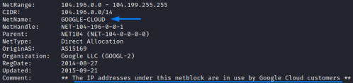
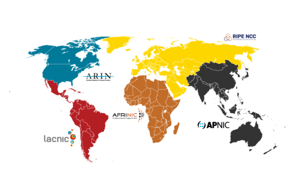
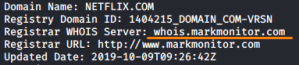
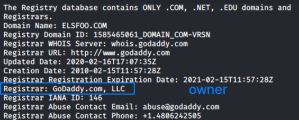

Whois Lookups
We can query the whois public database with the whois command(Linux
and OSX) or we can use a website:
•
http://whois.icann.org•
http://who.is•
http://whois.domaintools.com•
http://bgp.he.net/•
http://networking.ringofsaturn.com/Tools/whois.php•
http://www.networksolutions.com/whois/index.jsp•
http://www.betterwhois.com/•
<--
•
https://lookup.icann.org/
<--
Informations that we can retrieve•
Name Server(NS): the most important information that we can retrieve
from WHOIS that can help us to determine the infrastructure of the organization are the
Name
Server because these are the servers that store all the DNS related information (records) about the
domain
•
IPv4 and IPv6: official address assignments of a
domain or company name
•
CIDR block → (Classless Inter-Domain
Routing) tell us the size of the target network. We have to be careful because some organizations get IP addresses
from their ISP. we This mean that we may get back a giant block of addresses that do not apply to only the
organization we searched for but instead apply to its entire ISP. So we have to verify that these addresses are
actually within the scope of our test.
•
Autonomous System (AS or
ASN): it is a number that refer to a collection of IP networks and their associated routers under the
control of a single technical administrator. The range of IP addresses that a given AS has control over is called
their "IP address space."
•
Target ISP's:
We need to check who belongs the Ip addresses of the target network. To do that we can also use
Netcraft
When a domain is registered,
the registrar gathers a significant amount of information about the internet gateway and people associated with the
domain. Most registrars put this information in publicly accessible
Whois
databases.
In the world there are 5 main Regional Internet Registry(RIRs) organizations each with its
Whois database.
We usually do not know in advance the
particular registrar used to register the target domain, by doing a generic whois query for the domain we can
retrieve the registrar and then query directly the registrar's Whois database for more informations
The
whois command will search the IP address in all of these databases
The regional registrar WHOIS servers
are:
◇ whois.afrinic.net (Africa)
◇ whois.apnic.net (Asia Pacific, India, China, and Australia)
◇
whois.arin.net (US and Canada)
◇ whois.lacnic.net (Mexico and Latin America)
◇ whois.ripe.net (Europe,
Greenland, Russia, and the Middle East)

Who is the owner of the
Ip address
?
Most versions of UNIX and Linux include a built-in whois client. It is also included by default in
macOS but not Windows. Microsoft SysInternals includes a whois client, available at
https://docs.microsoft.com/en-us/sysinternals/downloads/whoisIf
we know the
Registrar WHOIS Server of our domain(e.g.:
godaddy,markmonitor,corporatedomains...) we can instruct the whois command to use a different whois server with the
-h option and so retrieve maybe more informations
example:1.
 2.
whois -h whois.markmonitor.com netflix.com
Netblocks: range or set of IP
addresses.
Larger netblocks are given to larger organizations, such as
Internet
Service Providers (ISP) and Governments
While individuals or small organizations usually buy one or more IP addresses from the
ISP and this
is why running WHOIS on these
smaller netblocks, point to the
ISP and not to the individual or the smaller organization leased the
netblock example: 192.168.0.0 –
192.168.255.255 → 192.168.0.0/16 (CIDR notation) → 192.168.0.0 netmask 255.255.0.0
Autonomous
Systems: they are made of one or more
netblocks(ip networks) under
the same administrative control
Big organizations and ISP’s have an autonomous system, while smaller companies
will probably have a
netblock When we run WHOIS(
here
for more) we can find the
owner of an address under "
Registrar" or “
Name” depends which
tool/website we use.
In the example below is GoDaddy hosting provider that lease the IP address to our target
organization.

{kind=link}